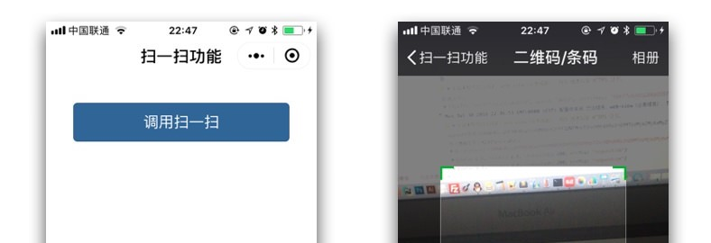

2018/02/24
Author: guoqzuo
小程序web-view组件内嵌网页调用微信JS-SDK
小程序web-view内置H5可以像公众号H5一样使用JS-SDK，但会有一定的限制，另外对于没有公众号H5调用JS-SDK经验的同学，可能会以为wx.config使用的参数是小程序的信息，下面以调用扫一扫为例子，介绍具体细节

小程序内嵌网页调用JSSDK与公众号网页里面调用基本一致，之前公众号h5可以直接嵌入到小程序里面使用，要注意的地方是：
- 内嵌网页调用JS-SDK需要使用公众号的appid及appsecret，与小程序的appid没有关系
- 小程序内嵌网页只支持部分JSSDK，详情参见： 小程序web-view组件
- 公众号需要将调用接口的域名加入JS接口安全域名，对应的ip加入ip白名单
这里以调用微信的扫一扫为例子，来体验整个流程，前端html：
<!-- 前端HTML -->
<!DOCTYPE html>
<html lang="en">
<head>
<meta charset="UTF-8">
<meta http-equiv="X-UA-Compatible" content="IE=edge">
<meta name="viewport" content="width=device-width, initial-scale=1">
<title>扫一扫功能</title>
<!-- weui样式 -->
<link rel="stylesheet" href="https://res.wx.qq.com/open/libs/weui/1.1.2/weui.min.css">
<!-- 微信JS-SDK需要引入的js文件 -->
<script type="text/javascript" src="https://res.wx.qq.com/open/js/jweixin-1.3.2.js"></script>
</head>
<body>
<div style="margin:10%">
<button class="weui-btn" onclick="startScanning()" style="background:#336699">
调用扫一扫
</button>
</div>
<script src="https://cdn.bootcss.com/jquery/3.3.0/jquery.min.js"></script>
<script src="/public/js/common.js"></script>
<script>
// 是否在小程序内部打开的网页
function isOpenInWechat() {
return (window.__wxjs_environment === 'miniprogram');
}
// 非小程序内部打开，提示错误
if (!isOpenInWechat()) {
alert('请在小程序里打开页面');
}
// 获取signature及对应的时间戳，随机字符串
var obj = getSignature();
// 权限验证
wx.config({
debug: true, // 开启调试模式,调用的所有api的返回值会在客户端alert出来，若要查看传入的参数，可以在pc端打开，参数信息会通过log打出，仅在pc端时才会打印。
appId: 'wx90aaf3035f813f5a', // 必填，公众号的唯一标识，此处填写企业号corpid
timestamp: obj.timestamp, // 必填，生成签名的时间戳
nonceStr: obj.noncestr, // 必填，生成签名的随机串
signature: obj.signature,// 必填，签名，见附录1
jsApiList: ['chooseImage','scanQRCode'] // 必填，需要使用的JS接口列表
});
// 请求后台接口，得到signature等
function getSignature() {
var res = null;
// 自己封装的ajax函数，同步执行ajax，发送请求，后台去操作
ajax_request('GET', '/initialize', 'getSignature', {}, function(result){
res = result;
},'sync');
return res;
}
// scan
function startScanning() {
// 调用微信接口
wx.scanQRCode({
needResult: 0, // 默认为0，扫描结果由微信处理，1则直接返回扫描结果，
scanType: ["qrCode","barCode"], // 可以指定扫二维码还是一维码，默认二者都有
success: function (res) {
var result = res.resultStr; // 当needResult 为 1 时，扫码返回的结果
}
});
}
</script>
</body>
</html>后台使用了nodejs+express，获取signature等信息
// 后台node代码
// 发送get请求依赖
var https = require('https');
// SHA 加密
var crypto = require('crypto');
/**
* signature 调用了initialize函数
* 调用微信的接口获取access_token及jsapi_ticket，生成signature。这里只是演示，没有缓存数据
* 注意调用接口有次数限制。获取access_token | 2000次/每天；获取jsapi_ticket | 1000000次/天
* 正式环境下业务量大就需要将access_token和jsapi_ticket存入缓存，一般有效期为7200秒。
*/
function initialize(app, data, req, res) {
// 获取access_token
var url = 'https://api.weixin.qq.com/cgi-bin/token';
var appid = 'wx90aaf3035f813f5a';
var appsecret = '这里填公众号生成的appsecret';
var preRes = res;
url += "?grant_type=client_credential&appid="+appid+"&secret="+appsecret;
https.get(url, function(res) {
console.log("Got response: " + res.statusCode);
res.on('data', function (d) {
d = JSON.parse(d.toString());
console.log(d);
var access_token = d.access_token;
var ticketUrl = "https://api.weixin.qq.com/cgi-bin/ticket/getticket?access_token=";
ticketUrl += access_token + "&type=jsapi";
// 获取ticket
https.get(ticketUrl, function (res) {
res.on('data', function (d) {
var d = JSON.parse(d.toString());
var jsapi_ticket = d.ticket;
var timestamp = new Date().getTime();
// 获取随机字符串
// toString()默认是10进账，如果想包含字母，禁止要大于10 toString(32)
// 0.66666666666xx => "0.66666666666xx" => "66666666666xx"
var noncestr = Math.random().toString().substr(2);
// 这里的url是调用接口时当前的url
var url = 'https://zuo11.com/start';
var targetStr = "jsapi_ticket=" + jsapi_ticket + "&noncestr="+noncestr+ "×tamp="+timestamp + "&url="+url;
console.log(targetStr);
// SHA1加密
var sha1_result = crypto.createHash('sha1').update(targetStr).digest('hex');
console.log(sha1_result);
// 将获取到的signature一级对应的时间错，随机字符串返回给前端
preRes.json({
'signature': sha1_result,
'noncestr': noncestr,
'timestamp': timestamp
})
});
}).on('error', function(e) {
console.log("Got error: " + e.message);
});
})
}).on('error', function(e) {
console.log("Got error: " + e.message);
});
}官方文档：微信JS-SDK说明文档